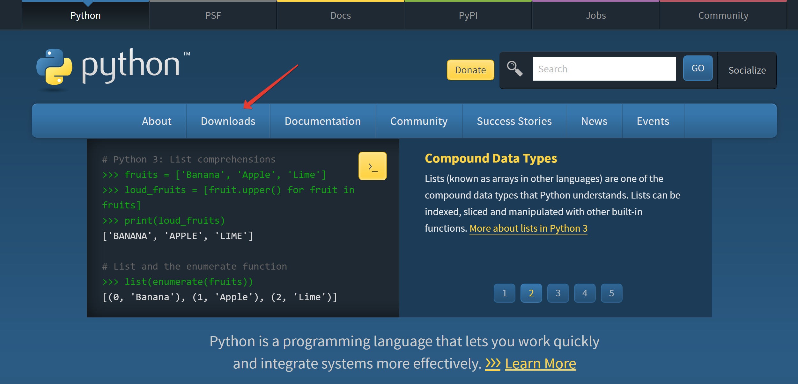
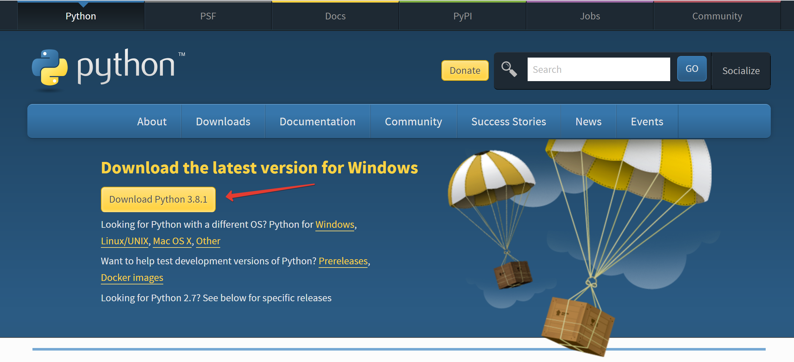
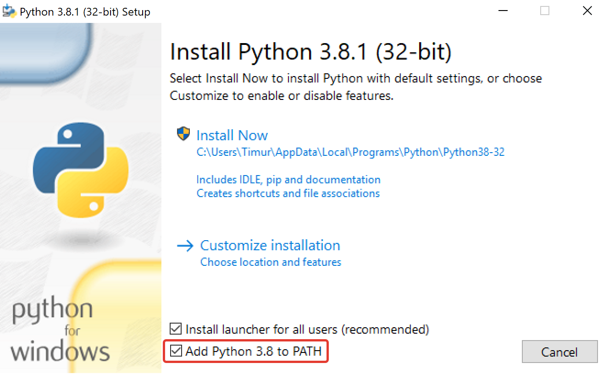
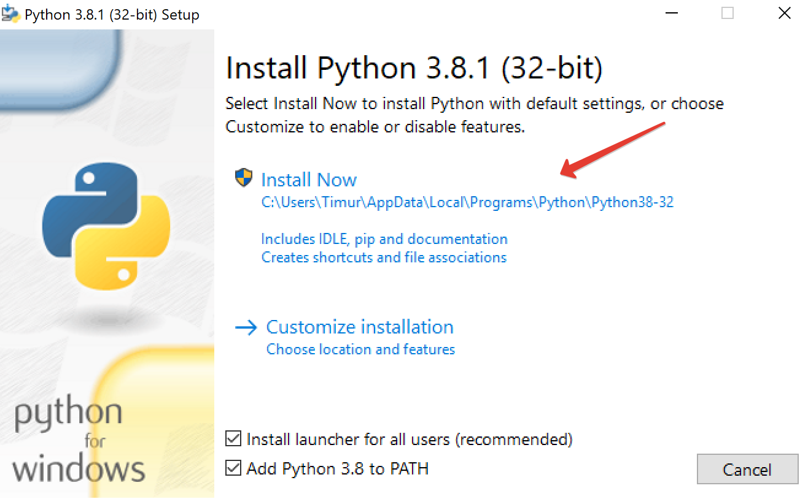

<!-- index.html --> 
<script src="https://rawcdn.githack.com/oscarmorrison/md-page/232e97938de9f4d79f4110f6cfd637e186b63317/md-page.js"></script><noscript>

<style>
@font-face { font-family: CMUSerif; src: url('../data/fnt/cmunrm-msofix.ttf'); }
@font-face { font-family: CMUSerif; font-weight: bold; src: url('../data/fnt/cmunbx-msofix.ttf'); }
body {
	font-family: "Times New Roman", Times, serif;
	width: 850px;
	margin-left: auto;
	margin-right: auto;
	font-size: 20;
	margin-bottom: 300px;
}
h1, h2 {
	font-family: "CMUSerif", serif;
}
img {
	
	width: 850px;
	object-fit: contain;
}
</style>
<head>
	<title>Установка Python на Windows</title>
	<link rel="icon" type="image/x-icon" href="../data/img/favicon.ico">
</head>
<p style="text-align: right; font-style: italic;">©shaperones</p>

# Установка Python на Windows 🐍
- - -

Язык Python относится к свободному программному обеспечению, поэтому его можно скачать с официального сайта, свободно распространять и устанавливать на все современные операционные системы.
## Шаг 1. Скачайте установщик Python 3
1. Откройте окно браузера и перейдите на сайт [python.org](https://www.python.org/);
2. Кликните по ссылке Downloads;
3. Кликните по желтой кнопке Download Python 3.x.





## Шаг 2. Запустите установщик
1. Установите галочку напротив Add Python 3.x to PATH;
2. Кликните Install Now;
3. Через несколько минут на вашем компьютере будет установлен Python 🐍





На момент создания курса последней версией является Python 3.12.0 (на момент вашей установки версия может отличаться).
